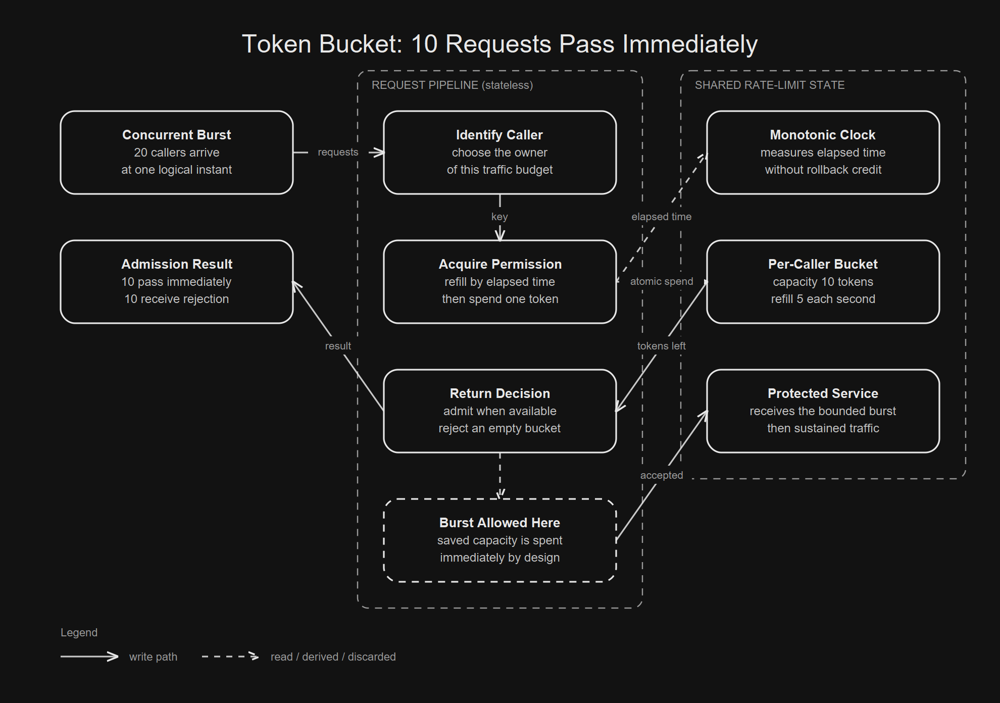

They protect different time horizons.
Each admitted request spends one token.
Responsiveness now reduces permission later.

01 / The naive solution
The Obvious Counter Hides a Boundary
The first rate limiter almost writes itself. Count requests during a fixed interval. Reject anything above the configured limit. The code is small enough to trust at a glance.
long second = clock.instant().getEpochSecond();
AtomicInteger count = counters.computeIfAbsent(
second, ignored -> new AtomicInteger());
if (count.incrementAndGet() > limitPerSecond) {
throw new TooManyRequestsException();
}That limiter enforces a number. It does not enforce the traffic shape most people imagine. Dense groups can land on opposite sides of a reset and reach the backend almost together.
window A window B
...............||||| | |||||...............
reset ^The counter is reasonable. The clock boundary is the hidden policy.
02 / Legitimate bursts
A Flash Sale Arrives Between Ticks
Alice opens a flash sale. A legitimate checkout batch reaches the API at once. The service was quiet before the event, so it has spare capacity, but a rigid smoother makes every caller wait.
quiet traffic → flash sale burst → quiet traffic
...............██████████.................A fixed window can fail in the other direction. It forgets the cluster immediately before its reset, then admits the next cluster as if the first never happened.
counter before reset: full
counter after reset: empty
backend sees: adjacent burstsThe useful question is how much accumulated capacity may be spent at once.
03 / Separate controls
A Rate Is Not a Burst Policy
A sustained rate and a burst limit answer different operational questions. The sustained rate protects long running capacity. The burst limit decides how much short lived concurrency the backend may see.
steady rate → long term admission pace
burst limit → maximum saved permissionStripe’s engineering article says its request rate limiter can briefly burst above the cap for sudden real time events. That behavior defines the desired traffic shape. It does not bypass it.
04 / Token state
Saved Capacity Becomes Tokens
A token bucket makes the policy tangible. The bucket starts full. Every admitted request removes a token. Passing time adds tokens until capacity is reached. An empty bucket rejects new work.
time passes request arrives
| |
v v
refill tokens ------> spend one token
| |
+---- cap bucket <-----+Stripe describes a centralized bucket, with one bucket per user, and says its limiter implementation uses Redis. The small repository keeps state in memory so the algorithm stays visible.
05 / Independent parameters
Capacity And Refill Rate Answer Different Questions
The local demo uses capacity 10 and refill rate 5 requests per second. Those values are benchmark parameters, not Stripe settings.
capacity = 10 tokens
refill = 5 tokens / secondCapacity bounds the immediate burst. Refill rate bounds sustained admission after the saved tokens disappear. Raising capacity does not improve the long term rate. It only makes the next cluster sharper.
larger bucket → faster burst → deeper later drought
smaller bucket → smoother load → earlier rejection06 / Atomic permission
A Token Bucket Spends Credit Immediately
The executable implementation needs bounded state and a monotonic timestamp. It accounts for elapsed time, then spends one token if possible.
public synchronized RateLimitDecision tryAcquire(long nowNanos) {
if (nowNanos > lastRefillNanos) {
double elapsed = (nowNanos - lastRefillNanos) / NANOS_PER_SECOND;
tokens = Math.min(capacity, tokens + elapsed * refillPerSecond);
lastRefillNanos = nowNanos;
}
if (tokens < 1.0) return RateLimitDecision.rejected();
tokens -= 1.0;
return RateLimitDecision.accepted(0L);
}The synchronization is load bearing. Without one atomic decision around refill and spend, concurrent callers can observe the same remaining token.
read tokens → refill → compare → decrement → persist
one atomic decision07 / Smoothing instead
A Leaky Bucket Turns Credit Into Waiting
A leaky bucket answers the burst question differently. It accepts a bounded queue, then dispatches work at a steady pace. Incoming callers may be admitted without reaching the protected service immediately.
burst → [ queued work ] → one paced stream
finite depth constant leakWith the demo’s rate, the final accepted request waits 2,000 ms. The measured mean wait is 1,100 ms.
leaky: paced dispatch slots ... final delay 2000 ms
token: immediate dispatch ... final delay 0 msThe token bucket favors short event responsiveness. The leaky bucket favors a smoother downstream arrival pattern.
08 / Executable evidence
The Local Benchmark Makes the Tradeoff Visible
The Spring Boot entrypoint releases 20 virtual threads against each limiter at one logical instant. Both limiters have identical capacity and rate. Concurrent admission is real, while the logical clock makes the result reproducible.
mode,total_requests,accepted,rejected,immediate_dispatch,max_dispatch_delay_ms
token_bucket,20,10,10,10,0
leaky_bucket,20,10,10,0,2000The token bucket admits 10 immediately and rejects 10 after capacity is spent. The leaky bucket also admits 10 and rejects 10, but only 5 accepted requests dispatch within the first second. These are local repository measurements.
09 / Protection scopes
Four Production Controls Protect Different Things
The source article names four limiter types used in production. Their scopes are distinct, so a token bucket should not become a universal overload story.
request rate → one user's sustained traffic
concurrent work → expensive in flight endpoints
fleet reservation → capacity for critical methods
worker shedding → available server workersThe first controls traffic that can be paced. The next controls work already in progress. The final pair make system wide decisions when capacity is threatened.
11 / Operational behavior
Failure Policy Belongs Inside the Limiter
The limiter will eventually fail. Its store can time out. Configuration can be wrong. Stripe recommends catching operational errors so limiter failures do not take the API down, plus a kill switch and clear responses.
empty user bucket → 429 Too Many Requests
system shedding → 503 Service Unavailable
limiter failure → explicit fail open policyFail open preserves the API but weakens protection. Fail closed protects capacity but turns limiter trouble into an outage. The route decides which failure is more dangerous.
12 / Safe rollout
A Dark Launch Reveals the Missing Policy
The safest first deployment observes rather than rejects. Stripe recommends dark launching each limiter, inspecting what it would block, tuning thresholds, and adding safeguards before enforcement.
observe → record would reject → tune → enforceThis stage exposes identities with surprising traffic, endpoints that cannot tolerate pacing, and bursts that represent ordinary business rather than abuse.
13 / Build one
Build The Dumb Version Yourself
Start with one process and one clock. Keep the mechanism small enough to inspect quickly.
[ ] create a full token bucket
[ ] release concurrent callers together
[ ] record every admission decision
[ ] compare immediate and paced dispatch
[ ] write the evidence as CSVThen run the Spring Boot entrypoint. It prints and writes the exact evidence used above.
./gradlew bootRunAdd shared storage only after the property is clear. Infrastructure should make the atomic boundary durable, not hide an undefined policy.
14 / Adversarial proof
Then Break It
Correctness lives at the edges: the simultaneous spend, the partial refill, and the broken clock. The test suite attacks those edges directly.
many callers at one instant → accepted never exceeds capacity
long idle period → refill never exceeds capacity
clock moves backwards → no tokens appear
fractional refill → no extra admission
invalid configuration → fail before trafficAlso compare both algorithms under the identical burst. If the token bucket stops dispatching immediately, or the leaky bucket stops spacing work, the implementation has lost the behavior being explained.
./gradlew test15 / The part that generalizes
The Larger Lesson Is To Name the Budget
Rate limiting is resource allocation with time attached. A bucket names the budget, the identity that owns it, the rate at which it recovers, and the maximum pressure the backend will accept as a burst.
A limit is not a wall. It is a budget with a clock.
wrong model: limit = one rigid ceiling
right model: rate + burst + scope + failure policyThe naive question asks for a requests per second number. The better question asks which resource is protected, how much saved capacity may arrive together, and what happens when the limiter itself fails.
A burst does not break the limit when burst capacity is part of the limit.